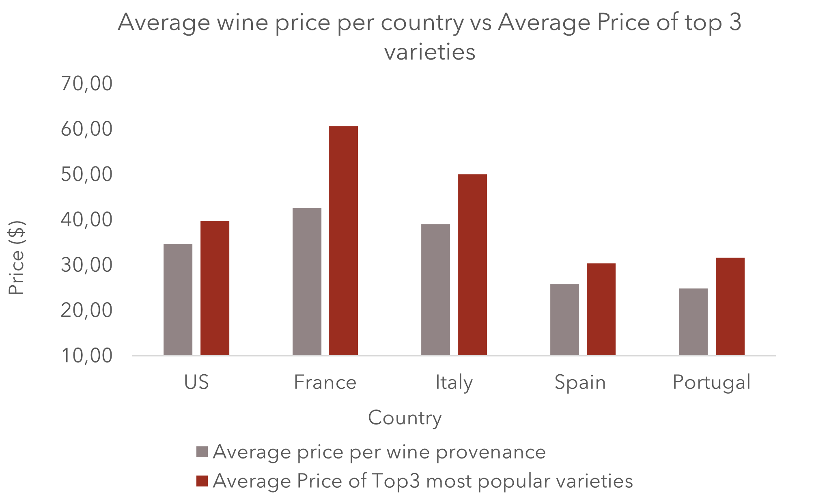
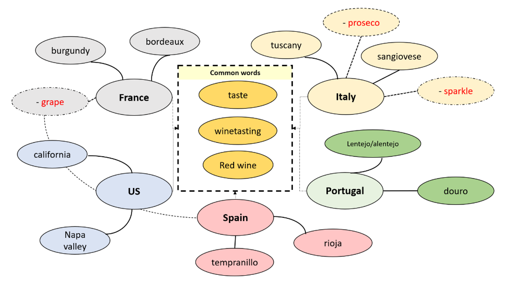
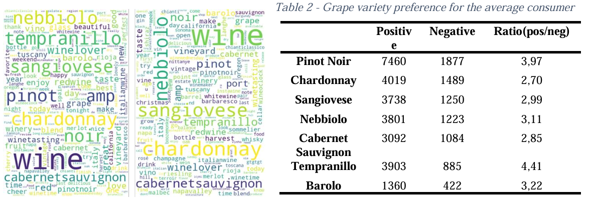
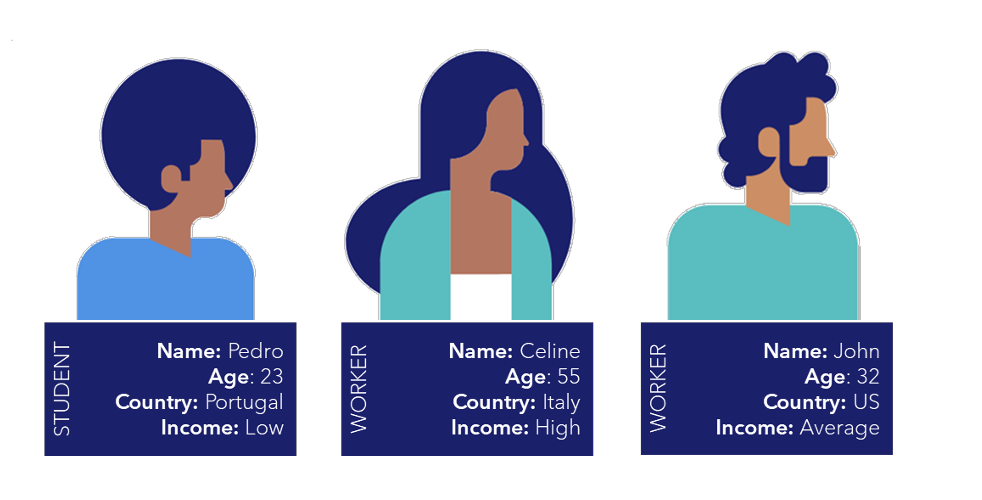

Ciù Cìu, a renowned Italian wine manufacturer tasked us with conducting a comprehensive customer analysis for forecasting future trends. The project entails K-Means Clustering and sentiment analysis of social media sites.
The project aims to understand current customer groups, most liked and disliked wines by brand, country, variety of grapes and tailor a business plan accordingly. The creation of personas and a engaging storytelling to present the data to the company's board was key to the project's success.
One of the industries that are constantly growing and that is more and more dependent on public/online opinion is the wine industry. The rising adoption of wine among all age groups (from the young generation to the old age population) across the globe is the key factor for market growth. Moreover, the COVID-19 pandemic has disrupted global wine distribution. The closure and restrictions on hotels and restaurants changed the purchasing behavior of consumers, that turned to food retailers along with online portals to shop for this type of product

Nowadays, social media gathers a seemingly endless amount of information in every field, that is available to anyone at any time. Although it might seem simple to collect useful data, it is extremely challenging to make use of this wealth of information.
With this background of studies, the possibility to analyze the sentiment behind wine reviews, as well as the most common topics that are being brought on the internet seemed to be the point where Ciù Ciù Tenimenti Bartolomei should focus all of its attention.
Following the line of the previous section, intending to help this company strengthen the cooperation among all its wineries to offer the market the highest quality wines from different territories, the research question chosen for analysis was the following: “When people are looking for wine online, what are the research keys that lead them? The brand of the company, the geographical area of wine production, or the grape variety?”.
By answering it and having access to the most searched words related to wine, whether the brand, the city/province, or even grape variety, this analysis will provide insight into public opinion concerning certain aspects of wine and support the decision-making of Ciù Ciù Tenimenti Bartolomei regarding the development of its sales strategy, including decisions regarding its future wine production, while knowing which type of wine to sell and advertise, depending on the target the company has in mind.
To be able to have the necessary answers, the first step lay on a sentiment analysis through the Twitter Sentiment Analysis dataset. By splitting the mentioned dataset, it was possible to train and test the model to classify sentiment within tweets as positive, negative, neutral, or irrelevant.
The story relies on the reality that each consumer is a whole world with different situations, thinking processes, taste, etc. These contrasts among people make the selling problem much more complicated because, Can you satisfy everyone? The answer is clearly no, but we believe we can get close to that point. How? By segmentation and clustering, dividing our market from top to bottom. For the development of this project, the first assumption is to consider two different types of wine consumers:
- Wine – expert: Heavily invested wine consumers, medium or high knowledge about wine and wine related topics. Enjoy quality over quantity and wine-tasting is a primary focus
- Average consumer: Less trained in wine matter, drinkers but not well informed or connoisseurs of the wine industry. Differentiate less between different different taste, varieties or bottles. Wine buyers for a wide variety of reasons but not winetasting.
Data collection was done according to the previous assumption. For the expert consumer, 270k reviews acquired from Wine Enthusiast Magazine were used. This magazine includes wine reviews from professional sommeliers and wine-tasters, addressing features such as rating, price, description and variety.
To approach the average consumer problem, efforts must be pointed somewhere where everybody as access and scrapping of data will be simple to perform - the answer is Social Media platforms, mainly Twitter. Using a twitter scraper tool, the goal will be to analyze what the general public post about wine, country of provenance, grape variety or brands, along with checking potential similarities with the expert criteria. The final objective would be to cluster, in some extent, what are the main preferences of these two big groups of consumers and the thinking process they follow in the acquisition of a bottle of wine.
As depicted in the figure on the left, it is important to keep in mind that the top wine manufacturer when it comes to expert reviews belongs to the US. Italy and France wines arise in the following places, followed by Portugal and Spain. These might be considered the most relevant countries regarding wine production, and therefore the main competitors of Ciù Ciù - the ones the company should focus its attention on.
First step - Expert Reviews
Figure 4 illustrates the top reviewed grape varieties of the thousands of experts' reviews collected, from where is possible to claim that Pinot Noir is the grape variety that generates more reviews, followed by Cabernet Sauvignon, Chardonnay, Red Blend, and Bordeaux-style Red Blend. This information transmits to Ciù Ciù several insights related not only to the products the company should invest in but also related to the pricing strategy the company can pursue.
By knowing the most wanted grape varieties for the different areas of the provenance, Ciù Ciù can have a different price strategy for its wine, usually for a higher price than the average one of the countries of production. The previous figure argues that wine tasters do not mind spending more for one of the most popular varieties of each country if price is compared to the mean of each country entire set of variety choices.
As a title of example, it is possible to verify that, if wanting to expand to France, Ciù Ciù would be able to charge a higher price when compared to the remaining countries. From this same Figure, it is also possible to conclude that French wines are the ones where people are willing to pay a higher price for popular varieties, and where companies with good and famous varieties can practice prices relatively higher than the average one, which might be a sign of a good country to invest hereafter.
Moreover, experts tend to attribute a higher rating to French and Italian wines, being their most popular varieties and the most expensive when compared to the remaining countries. They would fit expensive-taste consumers but also demanding ones. As already referred, this analysis might give Ciù Ciù insights about pricing differences according to the country of origin, and also that production in low economic power countries could led to a cheaper market price in those wines.
More precisely, contrary to France and Italy, lower prices are charged both for Spain and Portugal. Therefore, if Ciù Ciù intends to invest in these two countries, young people with not so much economic power could be a good target group to consider. Contrarily, by focusing its strength on Italy and France, the company can target people with more expensive tastes.
Nevertheless, it cannot be neglected the fact that in Portugal (e.g.), varieties with a very high rating are available, coupled with a wide variety of prices, meaning it is a country possible to fit all types of personas, for all types of occasions. As for the US, the latter can be seen as the “middle ground” between Portuguese&Spanish and French&Italian wines.
Going into more detail, we can found here the most common words for the positive reviews. As expected, Cavernet Sauvignon grape variety, together with Pinot Noir, stand out in the positive opinions of experts, along with words such as “fruit”, “flavor”, and “black cherry”. It is also noteworthy that brand names and provinces are not mentioned that much and instead people seem to be more concerned and look more for flavors and grape varieties. More specifically, people tend to search more for fruity, cherry, and red/blackberry flavors, with a clean finish.
Second step - Average Consumer
For a general insight of what the average wine buyer thinks about wine, a general scrape was conducted to further analyze the disparities between the opinion of normal wine consumers with the one from experts. For that, 27 thousand tweets were scrapped through the hashtags #wine, #redwine, and #whitewine – to attain general information on the first place.
After splitting into categories, it is curious to notice that the red wine falls mostly on the positive tweets, contrary to the white one, that mostly appears on negative comments. Furthermore, negative reviews provide clues that what consumers focus on to rate a wine is 'taste' however they lack in identifying its features. Positive labeled tweets also entail words such as 'great' 'day' and 'enjoy' from which we can analyze that the average consumer has a tendency of associate good life experiences with a cup of wine, for example, in a context of celebration or social gatherings.
Following the type of wine, it is important to recall that “Brand” was not an attribute very present in experts' reviews. Therefore, the ensuing brands from the “World's Most Admired Wine Brands 2021” were scrapped from twitter to allow further analysis:
Around 20 thousand tweets were scrapped, ending with a high number of irrelevant sentiments, probably due to advertisement or even spam. Positive reviews show to be double as negative reviews. However, it is noteworthy to mention that some of the most shared words on social media are the same for both emotions. It is possible to extract that the average consumer identify brand, especially when it is an exclusive one, such as: Penfolds, Beringer, or Tignanello, that make the top three of most tweeted words when talking about the positive labeled reviews. These three brands are all renowned wine manufacturers from Barosa Valley (Australia), Napa Valley (USA) and Toscana (Italy), having a wide variety of wine prices and varieties.
One of the main bases of this project must be the wine provenance or the country where the wine is manufactured. As previously seen in the 'sommelier' reviews from Winemag, there is clearly a top 5 of countries that lead the wine production. Therefore, finding if the average consumer talks about the country of provenance and what topics he mentions when sharing his opinion on social media is a crucial point.
For this matter, tweets with the word wine and the country or nationality (e.g., wine + Italy or Italian) were searched for. After, the most frequent words for each were studied, filtered and clustered to get a better insight on the data that matter the most. Around 22 thousand tweets were secured in total, with positive comments for each country exceeding, in every case, the negative, irrelevant and neutral labeled comments.
The following step was to figure out what the average consumer talks about when using the wine country of manufacture in a positive or negative observation. To get these insights, a word cloud and the top frequent words for each of the top 5 countries was performed - where, clearly, some common words do not contain valuable information. However, looking closely at each country allow to identify some characteristic features that the average consumer talks about when writing a good or a bad review and that provides some interesting insights. Figure identifies and clusters some of them.
Every community scrapped share a very positive approach to winetasting (especially when talking about Italy and France), along with red wine, that is mentioned in every positive dataset, while white wine is not mentioned. Talking about taste is also identified in every scrapped community, which leading to assume that words like smell or the type of wine (fruity/acid) are not considered that much by the average consumer, contrarily to the previous expert-reviews analyzed.
It is important to highlight that when talking about a country, the average consumer also mentions the region where the wine comes from, or even a popular grape variety of this country, matching the one extracted in the first step of the project from wine experts.
Going into detail, it is visible how Italian sparkle wines are not well appreciated by the general public, as well as prosecco, which is a typical white wine in Italy. When analyzing negative reviews, the word “grape” is observed in both Spain and France, probably meaning those countries grape varieties are easily identified by the general buyer to an extent and can be distinguished when they do not taste as usual.
Following the story line and by gathering all the above information, it is possible to give Ciù Ciù Tenimenti Bartolomei a more objective view. For this, examples of target groups and bottles of wine that each one is likely to seek will be presented. Let the following 3 personas be considered:
Pedro is a 23-year-old student from Portugal willing to go out with his friends next Friday, with the counterpart that he does not have a lot of money to spend. However, he enjoys a good bottle of wine.
Celine is a 55-year-old woman who is having some friends over for a fancy dinner next weekend and pretends to impress them. Her friends have high knowledge on wine, contrarily to Celine, who is no connoisseur and does not know anything about wine tasting.
John is a 32-year-old man who is meeting his girlfriend parents for the first time, and therefore wants to buy a bottle of wine for them. He has some basic knowledge on fine wines, but he cannot afford them with his actual salary. Nevertheless, John does not want to look cheap.
To summarize all findings, it is vital to understand that you cannot satisfy everyone, but that is possible to get close to that point. The first step to do that is to understand the two segments analyzed (experts and the average consumer) prioritize different features when purchasing a bottle of wine. As expected, experts tend to focus on more specific features, such as the grape variety, the acidity/fruitiness, and even the finish, while the average consumer focus on more general aspects, like the taste (if it feels good, or not), and tends to know only the most famous varieties, not always being able to differentiate them easily.
In the end, the most important step of core of the report was to answer the following: “When people are looking for wine online, what are the research keys that lead them? The brand of the company, the geographical area of wine production, or the grape variety?” The truth is that, even though factors like price and special occasions influence the choice of a bottle of wine, both segments look more online for the variety of the wine, followed by the country, and lastly by the brand, the latter being practically irrelevant. When it comes to the variety, the two groups have a common preference, Pinot Noir.
Lastly, concerning the country, people have preferences regarding the region of the wine. In Portugal, the preference falls in Douro region, and in Spain population tends to give the first place to wines from Rioja. Going to Italy, the favorite region is Tuscany (very good insight for Ciù Ciù), paired with Barolo (direct competitor for Ciù Ciù production). Regarding France, the top place is attributed to Bordeaux or even Burgundy. Going further in the globe, Napa Valley arrives as preferable region in the US. If Ciù Ciù intends to produce in other parts of the world, these regions would be good places to investigate.